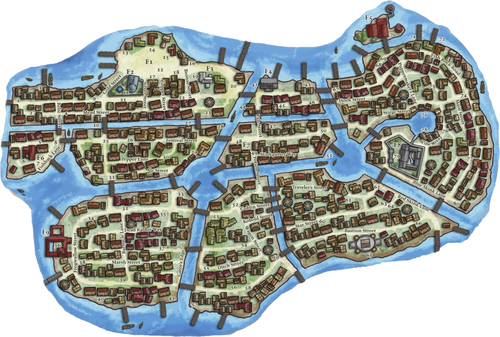

Sasserine
Quartier des Marchands
Présentation du quartier
L'Ogre Chatouilleux
Une taverne du Quartier des Marchands.
Le Nain à la Cuirasse
Armures de qualité.
La Loge du Sourcier
Un lieu fréquenté par les explorateurs, érudits et chasseurs de secrets.
Marché aux Écailles
Produits de consommation courante, fruits de mer, bibelots et bijoux.
Cave de Glittermane
Magasin de magie.
Quinze Chevaux et une Mule
Une taverne connue du Quartier des Marchands.
Bains de Heinvar
Bains publics.